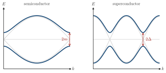

Advanced Quantum Materials 2027 · All lectures · Lecture notes
Session 1. Second Quantization, Mean-Field, and Spontaneous Symmetry Breaking
1.1 Why quantum materials, and why now
Before we start with the mathematics, let us say a few words about why this subject is relevant. Every period of human technology has been named after the material that defined it. There was the stone age, the copper age and, very recently, the silicon age, which gave rise to the whole information revolution in which we live now. If we look ahead, it is plausible that the next period will be a quantum age, in which our technology directly uses quantum mechanical behavior at microscopic scales instead of avoiding it. Quantum materials are the physical platform for this change, since they are the systems that realize quantum matter in the lab.
At the end of this session we should be able to describe what a quantum material is and to explain why we need quantum mechanics, and not classical physics, to understand it. We should also be able to work with the basics of second quantization, and to rationalize why mean-field theory gives rise to spontaneous symmetry breaking.
Quantum materials are already the basis of technologies that we use today. Superconductors make MRI machines possible, since they generate the very large magnetic fields that nuclear magnetic resonance needs, and semiconductors are the basis of solar cells, on which a large part of our plan for renewable energy depends. In the future, almost every serious platform for quantum computing, whether it is built from superconductors, semiconductors or a combination of the two, is in the end a quantum materials problem. Let us also mention briefly that this is connected to several of the UN Sustainable Development Goals. Quantum computing is connected to goals 8 and 9, which are economic growth, industry and innovation. Solar energy and superconducting or topological electronics with low power consumption are connected to goals 7 and 13, which are clean energy and climate action. The international and cross-disciplinary character of the field is connected to goal 17, which is partnerships. None of this is mathematics, but it is good to remember why we do the mathematics.
In the course we will see two kinds of examples, and it is useful to compare them. Semiconductors are in some sense the easy case, since their properties follow from single-particle physics, which you have likely seen already in an earlier course on materials. Superconductors are the harder case, because to understand them we have to account for how electrons interact with each other collectively, and this is the many-body formalism that we start to build in this session. The spectra in Schematic 1.1 show a gap of each kind.

Both gaps in the figure remove the states around \(E=0\). Which statement about their origin is correct?
Show the answers
- A. ✓ True
This is true. The lattice of the semiconductor can be diagonalized one electron at a time, so its gap is a single-particle result. The superconducting gap exists only because many electrons pair together.
- B. ✗ False
This is false. Take a metal and keep only the single-particle hopping. We get a Fermi surface and no gap at all, however large the attraction between the electrons would be, because the attraction is not in that Hamiltonian.
- C. ✗ False
This is false. A chain with onsite energies \(\pm m\) and hopping \(t\) has a gap \(2m\) at the zone edge with no interaction at all. In contrast, switching off the attraction between the electrons closes the superconducting gap.
We can diagonalize the lattice of the semiconductor with one electron at a time. For the superconductor we need the many-body formalism of this session.